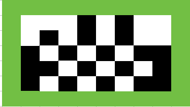
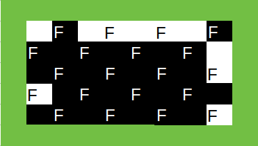
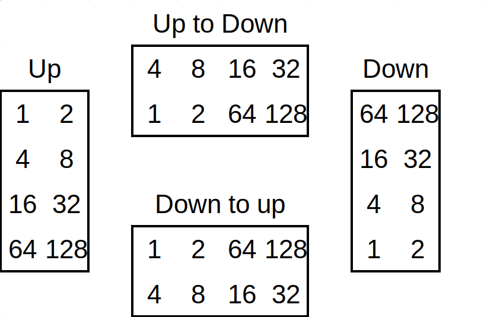
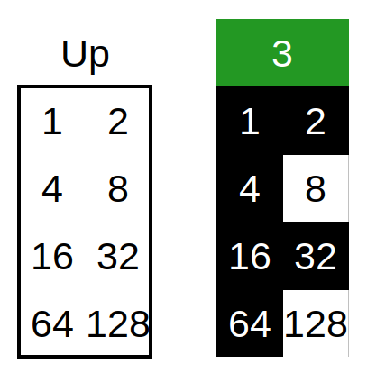
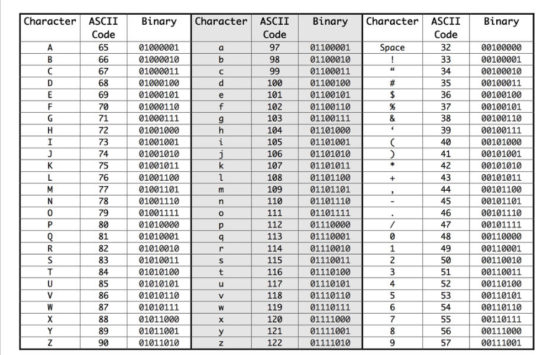
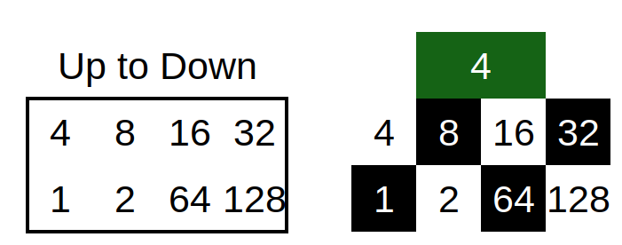

How to decode QR codes by hand
QR codes are everywhere! From ordering food to getting event info, I'm contstantly scanning these little black and white boxes. I've always thought they were extremely complex and only veteran programers could understand their inner workings.
However, that is not true! They are actaully quite simple and hopefully, after reading this article, you will have a basic understanding of how they work.
What are QR codes?
Usually they are just links to websites.
QR code "zones"
Before you can decode QR codes you have to know the different parts of a QR code.
QR codes contain 3 "zones":
- Camera alignment (Including timing belts MAKE COLOR)
- Formating data
- Data
The names are mostly self explanatory;
The camera alignment section is for helping cameras align the QR code correctly.
The formating data section contains general formating information for the QR code. This includes the error correction level, mask pattern and the "Dark Module" (See purple square in the QR code diagram above)!
The data section contains the actual data (Usually a hyperlink) and all error correction parity data.
I will go over all these sections in detail.
Camera alignment
The camera alignment zone only has two parts:
- Position squares
- Timing belts
Both of these exist so cameras can align the QR code properly in order for the data to be easily read. The position squares (Shown in pink in the diagram above) are on 3 corners of the QR code. Note that the bottom right doesn't contain a position square COLOR. This helps the camera know which way is is oriented.
The timing belts (Shown in orange in the diagram above) connect each position square COLOR and always alternate between black and white pixels.

Formating data
The formating data is stored next to the camera alignment boxes. This data is:
- Error correction format [0-9]
- Mask pattern [10-11]
- Error correction level [13-14]
- The "Dark Module" []
All data is duplicated for redundency. If a square has the same number it is an exact copy in both positions!
The math behind the error correction COLOR is too complicated and mostly not important (Especially for humans!) so I'm not going to give a detailed explanation.
However, the mask pattern is needed to properly decode the data.
A mask is used to make the data less "organized" and easier to read. Its easiest to show this with a picture! Can you tell how many boxes wide this is?
Its kind of hard! There is no way to tell where one square ends and the next begins. Now try this:
Much easier! Whenever you create a QR code there is an algorithm that chooses a mask pattern which minimizes the amount of continuous colors.
In the case above, I used mask pattern black white black (101 in binary) which flips every other box to the opposite color. The picture below shows which ones were flipped to follow that mask pattern (F means the box was flipped):
There are 8 total mask patterns that you can apply to a QR code. The three lime green boxes indicate which one to use. Once you figure out which mask pattern is being used you just have to overlay the data section with it! Everytime the mask pattern has a black box, you flip the color of the box below it.

The animation below shows the process of umasking the QR code. In this case the mask is still black white black (101 in binary) so we just flip every other data box (Igore all camera alignment and formating data sections)!
First, it goes over every single data square and puts an "F" where It needs to flip. It then flips all the "F" squares.
ADD TOGGLE TO TURN ON AND OFF NUMBERS!
MAKE A BETTER VERSON OF THIS. Show where to find the mask pattern again and also talk about skipping the timing belts.
Also add picture alightment color and format data colors
Reading the data
We have now unmasked the data! All there is left to do is to read the data itself.
I've made a graphical representation of the data below.
- Data encoding [1]
- Length [2]
- Data (Characters) [3-6] *
- End of data [7]
- Error correction [8] * All shades of green are characters. They are different colors to differencate themselves.
FIX FORMATING DATA ERROR. ANIMATION ALSO DOES INCORRRECTLY DUE TO LAZY LOOPS. GO TO SOURCE!!!!
Understaning the sections
The first section, data encoding is simple! Data encoding is how and what data is being stored. Because you can store URLS, letters, numbers and much more in QR codes these 4 pixels tell what is in the given QR code!
Length is just the length (In 8 square sections) of the data! In our case (length 4), the length indicates how many letters are being stored but depending on what is encoded it might not exactly match up.
Characters / data are by far the most important parts of the QR code. These sections contain the letters or numbers that the QR code is storing. In our case, the four sections [3-6], contain the letters "w","i","k" and "i"!
The last important section is the end of data box. This will always be four white squares (After unmasking) and just indicates where the data ends and the error correction starts.
Error correction is too complex for this page and, again, is mostly useless for humans so I will skip it! Wikipeda has an article here [ADD LINK] if you want to learn more.
Reading the squares
Now that we know what seach section represents we need to be able to actually read them! I will skip the encoding section as it is isn't useful for decoding URLs or text.
To read the squares simply use this diagram below. Technically all the squares are binary (Black is 1 and white is 0) but the diagram below is what we are going to use on this page. [FIX THIS]
All you do is add up the numbers where there is a black square. For the first data section (3) the answer is just 1 + 2 + 4 + 16 + 32 + 64 = 119 (Remember, ignore all the white squares!)
Now that we have the number associated with the letter we use this table to find what letter it is!
119 is "w" which is correct!
Lets do the second character next (4). Because this one is sideways, and going from up to down, we must use the correct diagram (Up to Down).
1 + 8 + 32 + 64 = 105 which is "i" in the table and the correct letter.
